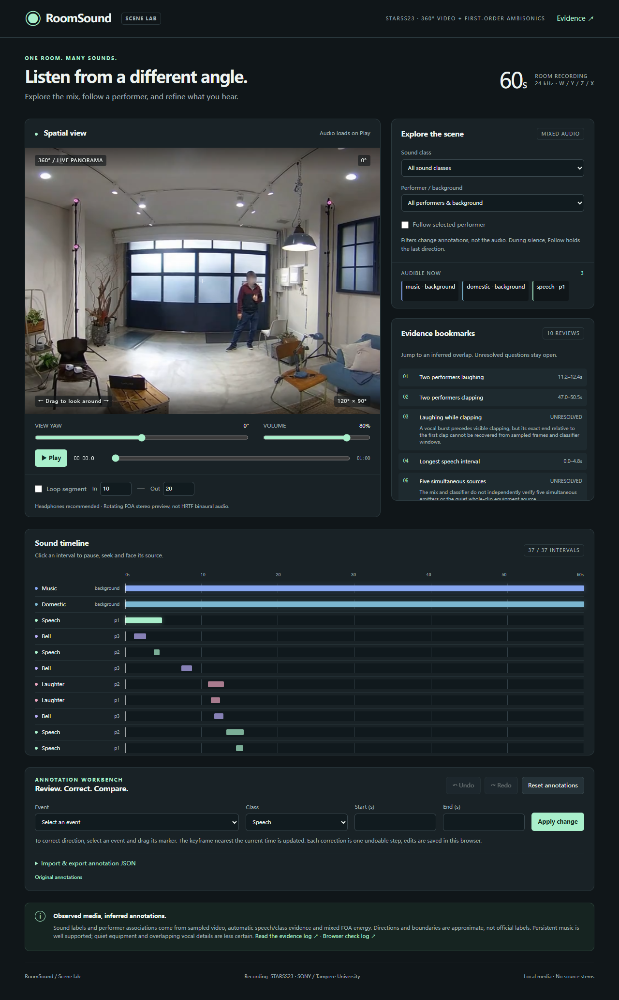
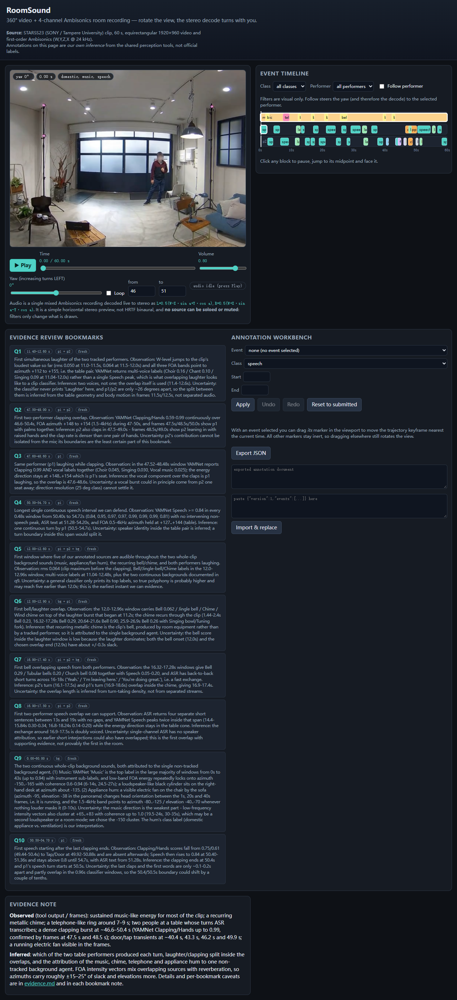
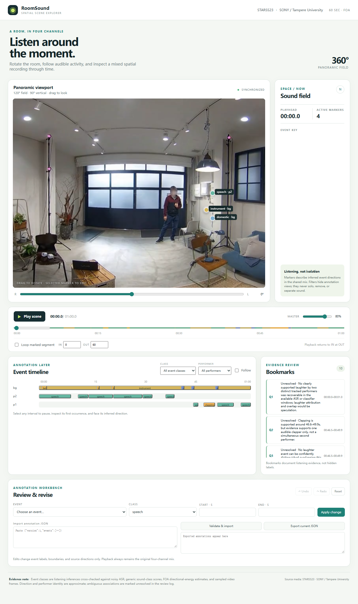
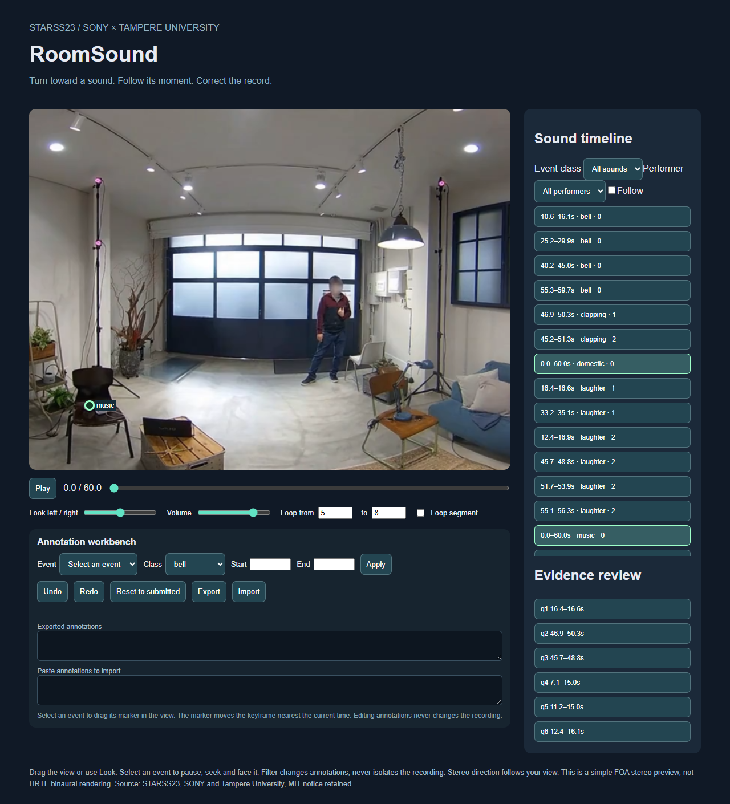

把一间吵闹房间的录音做成可转头的播放器
给 Agent 一分钟真实房间的 360° 录像，外加一份带方向信息的四通道录音。它要先弄明白"什么时候、什么声音、在哪个方向"，再把这份理解做成一个能转头看、转头听、按声音查找片段的网页。在现有自定义框架测试中，Sol 的播放器实现拿到满分，主要失分来自事件推断；这间房里每一刻都有两到五个声音同时响着，其中两个从头响到尾。
STARSS23 真实录音 · 非合成60 秒 · 360° 全景 + 四通道 FOA平均同时发声 3.33 个 · 峰值 5 个3 个模型 · 自定义框架单次交付 · 空项目起步模型无原生音频输入一、任务定义
委托场景：你拿到一段开会/聚会现场的 360° 录像和同步的空间录音，想做一个比普通播放器好用的东西——能转头看四周，转头时左右耳听到的也跟着变，画面上还标出"此刻这边有人在笑、那边铃在响"，点一下就能跳到那一段。
给 Agent 的材料
| 文件 | 是什么 |
|---|---|
scene.mp4 | 1920×960 等距柱状投影的 360° 视频，15fps，无声。一帧就是把房间四周摊平的一张长图，网页要自己从里面裁出"当前朝向"那一块 |
scene-foa.wav | 24kHz 四通道 一阶 Ambisonics（W,Y,Z,X）。这不是"说话一轨、铃声一轨"——四个通道共同编码整个房间的声音及其方向，里面始终是混在一起的 |
scene-mono.wav / scene-stereo.wav | 单声道和固定朝向的立体声预览，不能拿来替代规定的实时解码 |
素材来自 STARSS23（SONY／坦佩雷大学）fold4_room24_mix014 原始第 50–110 秒，只做了时间裁剪和转码，人脸由数据集作者原已模糊。
能看视频帧，音频依靠工具取证
这是本案例最容易被误解的一点：被测模型没有原生音频输入。它不能直接听这段录音，只能调用几个共享的取证工具，然后交叉判断：
| 工具 | 给什么 | 会怎么骗人 |
|---|---|---|
| 语音转写 | faster-whisper 转出的文字和时间 | 没有说话人归属；会把一长段静音吞进一句话里 |
| 声音分类 | YAMNet 对 0.96 秒窗口给出的 521 类概率 | 只是"可能性"，弱声音会被盖过；类名和本题的类别体系不是一回事 |
| 方向估计 | FOA 主动声强在三个频段、每 0.5 秒的主方向 | 多个声源重叠时会把它们混成一个向量；混响会把方向带偏 |
| 视频抽帧 | 指定秒数的真实画面（最多 36 帧） | 看见不等于听见：画面里有人在动，不代表此刻有脚步声 |
要交付什么
| 交付物 | 内容 |
|---|---|
events.json | 它自己推断出来的声音目录：每个事件的类别、起止时间、所属人物、以及方向轨迹（方位角／仰角随时间变化） |
reviews.json | 十道媒体推断题的答案（下详） |
index.html 等 | 真正能用的网页：全景拖动、真实 FOA 解码、播放/拖动/循环、标记、时间线、筛选、标注修订工作台 |
evidence.md | 证据说明，要把"观察到的"和"推断的"分开写 |
网页必须按题目给定的公式做实时解码：L=0.5*(W−X·sin a+Y·cos a)，R=0.5*(W+X·sin a−Y·cos a)。筛选只影响标记和时间线，不能假装把混合录音里的其他声音分离掉——这题没有独立声轨。
十道推断题：这题真正在考什么
光做播放器不够。题目另外问十个只有真正听懂这段录音才答得上来的问题，答案是held-out 的官方标注，模型看不到：
| 问题 | 标准答案 | |
|---|---|---|
| q1 | 两个不同的人同时笑的第一个瞬间 | 16.4–16.6s |
| q2 | 两个不同的人同时鼓掌的第一段 | 46.9–50.3s |
| q3 | 同一个人一边鼓掌一边笑的第一段 | 45.7–48.8s |
| q4 | 全片最长的一段连续说话 | 7.1–15.0s |
| q5 | 第一次至少五个声源同时响着的区间 | 11.2–15.0s |
| q6 | 铃声与笑声重叠的第一段 | 12.4–16.1s |
| q7 | 铃声与另外两人同时说话重叠的第一段 | 11.2–12.4s |
| q8 | 两个不同的人同时说话的第一个瞬间 | 3.5–3.8s |
| q9 | 两个贯穿全片的背景声同时在响的区间 | 0–60s |
| q10 | 最后一次鼓掌结束之后的第一段说话 | 54.0–55.1s |
判定条件：区间与真值的 IoU ≥ 0.5 或两端都落在 ±0.2 秒内，同时人物归属（匿名一对一映射，不看 ID 字面）和类别都要对，引用的事件也要真的支撑这个答案。答不出来可以写 unresolved 并说明理由——这叫诚实，但不得分。
验收标准：内容 50 ＋ 实现 48 ＋ 审查 2
| 桶 | 权重 | 怎么算 |
|---|---|---|
| 类别时序 F1 | 12 | 每 100ms 判断哪些类别正在发声，宏平均——每类等权，漏掉或虚报稀有类别都明显扣分 |
| 类别＋方向 F1 | 12 | 每 100ms 对活跃预测与真值做一对一最大匹配，类别相同且三维球面角误差 ≤25° 才算匹配 |
| 分段不变覆盖度 | 8 | 按真值事件算召回＋按时长加权算精确率。合理地拆分一段不扣分，虚假地把两段连成一段、重复报同一个源才扣 |
| 跨活动人物 IDF1 | 8 | 同一个人的说话、笑、鼓掌要归到同一个人物轨；用最优匿名一对一映射评，不要求 ID 字面相同 |
| 十道推断题 | 10 | 每题 1 分 |
| 基础播放器 | 22 | 浏览器实测：全景投影与拖动、标记几何与隐藏、事件导航、筛选、播放/拖动/循环、真实 PCM 解码、音画同步、响应式 |
| 人物筛选 ＋ Follow | 5 | 选中某人并开启跟随后，视角要跟着他当前活动的方向走，跨 ±180° 接缝也要对 |
| 书签导航 | 3 | 点一条书签要暂停、跳到中点、转向对应人物 |
| 标注修订工作台 | 18 | 字段编辑与校验、拖动标记改轨迹关键帧、原子撤销重做、派生视图与书签失效、导入导出与刷新持久化 |
| 证据与可用性审查 | 2 | 有据可溯、推断校准、桌面与手机可用性，各 0.5 |
音频验收会换入已知的四通道探针信号，实测不同朝向下各频点的真实幅度——不是看代码里有没有 yaw 变量，也不只看左右响度比。这一点后面会看到它抓到了什么。
二、运行结果
| 推理强度 | 总分 | 内容 /50 | 实现 /48 | 审查 /2 | 耗时 | |
|---|---|---|---|---|---|---|
| gpt-6.1-sol | high | 70.09 | 20.59 | 48.00 | 1.5 | 20m05s |
| claude-opus-5 | xhigh | 65.83 | 18.16 | 46.17 | 1.5 | 48m52s |
| gpt-6-luna | high | 47.79 | 6.48 | 39.81 | 1.5 | 17m15s |
| oracle 参考解 用官方标注验证确定性满分 | — | 98 / 98 | 50.00 | 48.00 | 未计 | — |
oracle 参考解使用官方标注，已通过同一判分器的确定性部分：98/98。其 2 分 LLM 审查未执行，完整总分 100 尚未验证。这证明确定性满分可达，不保证所有判据都没有缺陷。
Sol 与 Luna 的总分相差 22.30：内容贡献 14.11，实现贡献 8.19。Sol 的实现为 48/48，Opus 为 46.17/48，Luna 为 39.81/48；实现测试对 Sol 接近饱和，对 Luna 仍有区分度。
三份结果均来自自定义 Responses API 框架，不是 Codex 或 Claude Code。三者均用满 10 回合，状态为 budget_exhausted，对当时已有交付评分。Sol 的原定停止条件仍未达到：68.59 + 2 = 70.59。真正 Codex CLI 的 Sol/Terra 补测另行记录，完成前不列新成绩。
内容分拆开看
| 类别时序 F1 | 类别＋方向 F1 | 分段覆盖 | 人物 IDF1 | 推断题 | |
|---|---|---|---|---|---|
| gpt-6.1-sol | 0.671 | 0.433 | 0.359 | 0.433 | 1 / 10 |
| claude-opus-5 | 0.418 | 0.439 | 0.444 | 0.417 | 1 / 10 |
| gpt-6-luna | 0.419 | 0.052 | 0.071 | 0.033 | 0 / 10 |
| oracle | 1.000 | 1.000 | 1.000 | 1.000 | 10 / 10 |
交付出来的页面




三、运行轨迹
这三份历史成绩都跑在同一套自定义 harness 里，没有使用 Codex CLI 或 Claude Code：工具只有 list_files / read_file / write_files / video_frames / audio_evidence / run_command(check|serve|reload) / inspect_own_page / browser_action，没有任意 shell，文件读写仅限候选项目。它依靠工具接口限制答案访问。真实 CLI 也可以评测，但须先隔离金标、参考解、旧轨迹与展示页答案；不能仅凭切换工作目录声称隔离。
| 回合 | 工具调用 | 取证音频窗口 | 取用画面帧 | 自查截图 | 输出 token | |
|---|---|---|---|---|---|---|
| gpt-6.1-sol | 10 / 10 | 15 | 4 | 36 / 36 | 3 | 21,251 |
| claude-opus-5 | 10 / 10 | 14 | 3 | 26 / 36 | 1 | 133,633 |
| gpt-6-luna | 10 / 10 | 16 | 5 | 24 / 36 | 2 | 26,140 |
三者的取证策略差别不大——都先按 0–20 / 20–40 / 40–60 三段扫一遍音频，再按可疑时间点抽帧。真正的差别在之后：sol 和 luna 会回头补查（sol 又查了 43.5–53.5 秒这一段、抽了 33 帧），opus-5 则把绝大部分算力花在一次性写出完整交付上。
一个被测出来的协议缺陷：输出上限
原协议对每次响应设了 20,000 output tokens 的上限，从第一轮沿用至今，对所有候选一视同仁。但它对 GPT 系从来没有生效过，对 Opus 5 是硬墙：
| 候选 | 单次响应最大输出 | 被 20,000 截断 |
|---|---|---|
| gpt-6.1-sol | 11,428 | 0 次 |
| gpt-6-luna | 7,408 | 0 次 |
| claude-opus-5 xhigh | 20,000 | 2 次 |
原因是推理 token 也计入同一个上限。xhigh 下 Opus 5 在第 4、5 回合把额度全花在推理上，只产出推理、一个工具调用都没发出，项目目录全程为空。一个只约束某一个候选的上限，测的是上限不是模型，因此有效 Opus 运行将上限提高到 64,000，并移除主动请求时限。之后 Opus 5 单次写出 47,463 tokens 一次性交付 events.json 和 reviews.json——是旧上限的 2.4 倍，在原协议下它根本交不出东西。
这不影响已有成绩：两个 GPT 候选没有任何一次响应达到过旧上限、也没出现过 incomplete，上限对它们从未作为约束生效，所以 70.09 和 47.79 不需要重跑。过程中还发现"不传这个参数"会让网关回落到自己的默认 8192（更低），而传 200000 则网关挂 19.2 分钟后返回 HTTP 504——最终取 64000，约为有效 Opus 单次峰值 47,463 的 1.35 倍。未观察到截断，不代表无限额或保证永不受限；10 回合等任务预算仍在。GPT 未在新上限下重跑，这不是严格等预算对照。
模型自己写的证据说明（节选）
gpt-6.1-sol / evidence.md · 它查了什么
## Evidence inspected - Full panoramas at 0,3,6,9,12,15,18,21,24,27,30,33,36,39,42,45,48,51,54,57,59 seconds, plus the user-supplied 1,20,40s frames. - Table crop [0,390,420,350] in 1920×960 source coordinates at 10.8,11.8,12.6,16.7,21,26,33.7,45.5,46.5,47.5,49.5,50.5s. Tool snaps some requests to the nearest decoded frame. - Audio evidence over 0–20,20–40,40–60 seconds, each including ASR, YAMNet windows (0.96s / 0.48s stride) and three-band FOA active intensity (0.5s). A repeat of classes at 43.5–53.5s confirmed the same window outputs, not an independent observation. - Audio source hash reported by tool: 47ccb69500d95e876de3b0fff7763dd5206c5c1011d81fbcfc8082e02056c5e6. ## Performer continuity and coordinates `p1` is the nearer table performer, around source x=80 (azimuth +165°), mouth roughly elevation −12°. `p2` is the far-table performer, around x=270 (azimuth +130°), elevation −8°
claude-opus-5 / evidence.md · 它怎么定位房间几何
## Scene geometry (observed in frames at 1 s / 20 s / 40 s and crops) Panorama x -> azimuth with `azimuth = 180 - x/1920*360` (positive azimuth = LEFT). | What is visible | panorama x | azimuth | note | |---|---|---|---| | Person seated at the left end of the wooden table, facing right | ~95 px | **+162 deg**, elev ~ -12 deg | `p1` | | Person seated across the table (grey top, head blurred) | ~235 px | **+136 deg**, elev ~ -10 deg | `p2` | | Person standing in front of the frosted sliding door | ~1040 px | -15 deg | moves very little; see below | | Person working at the right-hand desk (laptop) | ~1800 px | -157 deg | static operator | | Electric fan on a chair by the sofa (head orientation changes between 1 s / 20 s / 40 s, i.e. running) | ~1470 px | ~ -95 deg, elev ~ -38 deg | appliance | | Dark cylindrical box on the right-hand desk (loudspeaker-like) | ~1660 px | ~ -131 deg | candi
两份都把"观察到的"和"推断的"分开写，也都如实声明了没有原生听觉。opus-5 额外做了一件没被要求的事：把全景像素坐标到方位角的换算公式写进了证据里，并逐个列出画面中每个人的像素位置与对应方位角。完整文件见下方「案例文件」。
四、失败分析
结论一：实现侧已经饱和，差距全在"听懂"
这道题的实现分 48 分里包含了专门设计的高难度部分——18 分的标注修订工作台，要求字段校验、按投影反算拖动关键帧、复合手势的原子撤销重做、派生视图与书签失效同步、导入导出与刷新持久化。
结果：sol 和 opus-5 都拿了 18/18。为了确认不是测试太松，专门写了一个"看着像对的"错误实现（少三条校验、导入不校验、拖拽不进撤销历史、书签失效只在加载时算一次），它丢了 5.48 分，而且丢分正好落在那几处，基础播放器、筛选、Follow、书签导航全满分。所以是真·满分。
这带来一个必须讲清楚的算术：实现 48 ＋ 审查 2 既然能被拿满，总分要低于 70 就必须内容分低于 20/50。消融显示"只标语音"这种烂答案也有 17.47 分。现有测试说明 Sol 已通过这些工程要求，不足以证明所有工程加难都无效，也不能推出只能改权重才能低于 70。
结论二：三种完全不同的失败方式
| 事件数 | 幻觉类别 | 推断题弃答 | 特征 | |
|---|---|---|---|---|
| gpt-6.1-sol | 37 | 0 | 5 / 10 | 类别都对，但持续只报最显著的一两个声音 |
| claude-opus-5 | 46 | 4 | 0 / 10 | 全部作答，但凭空标出不存在的类别 |
| gpt-6-luna | 19 | 2 | 7 / 10 | 整类漏报，且空间解码实际是坏的 |
| 真值 | 36 | — | — | bell / clapping / domestic / laughter / music / speech |
sol：背景声这关过了，垮在重叠
它正确识别出两个贯穿全片的背景声（domestic 与 music，各 60 秒，F1 均为 1.00）。但在"每一刻都有 2–5 个声音"的场景里，它只标了 26.6 秒语音，而金标事件时长合计为 38.1 秒；bell 标 13.3 秒（真值 19.4）、laughter 标 9.1 秒（真值 13.1）。类别＋方向 F1 因此只有 0.433，事件召回 0.294。这里的秒数按人物事件相加，允许重叠重复计时，不是有语音的墙钟时长。
它知道自己不知道：十道题主动弃答五道，理由写得具体（"ASR 没有说话人归属"、"分类器无法独立确认五路同时发声"）。
opus-5：过度自信，被宏平均放大
它是唯一十道全部作答的候选，背景声也标对了。但它凭空标出金标中未标注的 door、footsteps、knock、telephone 四个类别，共 78 个误报帧。
| 类别 | 真值 | opus-5 的 F1 | |
|---|---|---|---|
| domestic | 60s 背景 | 1.000 | |
| music | 60s 背景 | 1.000 | |
| clapping | 9.5s | 0.768 | |
| speech | 38.1s | 0.636 | |
| laughter | 13.1s | 0.451 | |
| bell | 19.4s | 0.321 | |
| door / footsteps / knock / telephone | 不存在 | 0.000 ×4 |
类别宏 F1 按"预测与真值类别的并集"平均，分母于是从 6 类变成 10 类、其中 4 类恒为 0——宏 F1 被压到 0.418，哪怕真实的 6 类都标得不错。失败模式是过度自信：sol 不确定就写 unresolved，opus-5 不确定就给一个答案。两者最终都只对 1 道题。
luna：旧评分器会给它满分的那个坑
它只交了 19 个事件，整类漏掉笑声，还标出金标未标注的 door 和一个长达 60 秒的 instrument。但最值得写的是它的空间音频解码：
| 测法 | 实测 | 判定 |
|---|---|---|
| 旧评分器：左右声道响度比 | 3.9994（期望 4） | 满分 9 / 9 |
| 新评分器：独立通道信号传输 | 各频点幅度只有目标的 1/5 ~ 1/20 317Hz 实测 0.0041 / 目标 0.0175；431Hz 实测 0.0012 / 目标 0.025 | 0 / 9 |
这是一个左右比例对、但实际波形完全不对的解码实现。造题时用人造反例预言过这种"伪装"，这一轮在真实模型提交上实锤了——没有这次评分器修复，luna 的实现分会虚高 9 分。
结论三：判据本身的毛病（查出来并修掉的）
评分器的错误也会被误当作模型失误。已有记录修正了以下问题，依据包括参考解校准、运行日志、DOM 与源码检查：
| 缺陷 | 后果 | 怎么查出的 |
|---|---|---|
| 拖拽测试从视口中心起手 | 正好点中声音标记，Follow 没被关掉 → 误扣 | 读候选的 DOM 命中目标 |
| 点导出按钮会滚动页面 | 后续拖拽坐标落到屏幕外，关键帧测试全灭 | 参考解校准时 6/7 不过 |
| undo 按钮禁用时直接 click | 卡 30 秒超时，把无关的检查一起清零 | 错误参考解在它正确实现的项上拿 0 |
| "非法编辑后状态不变"只取一次基准 | 第一条误放行后，后面每条都连带失败 | 同上 |
候选把导出/重置放进原生 <details> 折叠面板 | 首次评出 61.30、工作台五项全零 | 读候选的 index.html |
| 贯穿全片的事件没有"非活跃时刻"可探测 | 会反过来惩罚正确标注连续背景的候选 | 参考解在新场景掉到 97.91 |
| 审查脚本按版本字符串硬编码截图目录 | 新一轮审查直接报错 | 运行即崩 |
这些测试修正与协议修订分别记录，原始冻结清单保留。R3 还关闭了 ASR VAD 门控、适配了连续背景事件测试；Opus 的推理强度和响应上限也有差异，不能把全部运行条件称为逐字相同。
补充审计：书签引用检查仍有缺口
2026-11-03 离线复核重新得到三份内容分，候选文件摘要全部匹配，十道书签的标准区间也均可从金标独立推导。但错误反例显示：q2 写对区间和两个人的 ID，却只引用其中一人的鼓掌事件，历史判据仍会接受。引用完整性不能据此声称已经得到严格验证。
历史评分器和原结果保留。审计修订版已补充人物引用覆盖和同时性关系验证：参考解 10/10，两个缺失同伴活动的错误反例均被拒绝。三份旧提交统一重评后内容分均未变，新 Codex CLI 交付也按该版本评分。
结论四：这个场景的内容分梯度
把官方标注逐步削弱，看内容分怎么掉——用来确认这 50 分确实在奖励"听全"：
| 提交的标注 | 内容 /50 | |
|---|---|---|
| 完整（oracle） | 50.00 | |
| 去掉短于 0.5 秒的事件 | 47.03 | |
| 去掉两个连续背景声 | 35.21 | |
| 背景声和短事件都去掉 | 32.10 | |
| 只标语音 | 17.47 |
漏掉两个背景声就要付出 14.79 分，因为它们是宏平均 6 个类别里的 2 个，而且在每一帧都参与方向匹配。这正是本轮换素材要制造的梯度。
案例文件
- 2026-11-03 审计证据 · 审计报告 · 书签修订版回归结果 —— 内容复算、候选摘要、书签区间与判据反例
- TASK.md —— 交给 Agent 的完整题面（冻结版）
- protocol.json —— 历史协议及后续修订，预算：10 回合 / 50 工具调用 / 36 帧 / 12 截图
- frozen-manifest.json —— 冻结清单，27 个文件含素材哈希
- integrity-audit.json —— 历史完整性快照（最新复核见下）
- ROUND-3.md —— 本轮设计全记录：选素材的方法、工具可复现性验证、校准与修正
- 迭代报告 —— 四轮完整数据、评分器审计、结构性发现
- sol / evidence.md · opus-5 / evidence.md —— 两份模型自己写的证据说明
边界：网关返回的模型名是请求别名，身份未经独立认证；被测模型没有原生音频输入，分数不能当作"原生听觉能力"；claude-opus-5 跑的是 xhigh、两个 GPT 跑的是 high，这是公开声明的推理预算差异，不是等效对比；实现满分只表示预定测试全部通过，不等于所有行为完美。